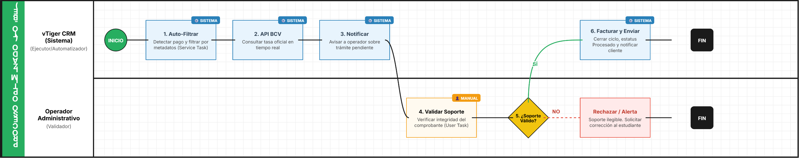

AS-IS (FACTURA TRAMITE ADMINISTRATIVO) TO-BE
1. Identificación y Alcance del Proceso
Esta sección establece el contexto general y los límites del proceso de registro de trámites administrativos.
Campo | Descripción | Contenido |
|---|---|---|
Nombre del Proceso | Nombre descriptivo y funcional. | Gestión y Facturación de Trámites Administrativos. |
Objetivo del Proceso | ¿Para qué existe este proceso? | Clasificar y registrar pagos por conceptos no académicos (títulos, constancias) para su correcta facturación en el CRM. |
Punto de Inicio | ¿Qué evento desencadena el proceso? | Recepción de un pago bajo el concepto de "Trámite Administrativo" en el sistema. |
Punto de Fin | ¿Cuál es el resultado final? | Factura registrada en el CRM con estatus "Procesado" y soporte validado. |
Documento Fuente | Documento base analizado. | Proceso 5: Creación de facturas para Trámites Administrativos. |
2. Actores Involucrados (Lanes)
Identificación de los roles y sistemas que intervienen en la ejecución.
Actor (Lane) | Rol en el Proceso | Responsabilidades Clave |
|---|---|---|
Operador administrativo | Ejecutor | Filtrar pagos, validar soportes, calcular tasas y registrar facturas. |
vTiger CRM | Sistema | Repositorio de datos, motor de filtrado y generación de facturas. |
3. Detalle de Actividades y Flujo AS-IS (Secuencia Lógica)
Paso a paso cronológico del estado actual del proceso.
No. | Actor (Lane) | Tarea / Actividad (Task) | Documentos / Sistemas Involucrados |
|---|---|---|---|
1 | Operador | Acceder al módulo de cobros | vTiger CRM (Payment Record). |
2 | Operador | Filtrar por "Concepto de Pago" | vTiger CRM. |
3 | Operador | Seleccionar categoría "Trámite Administrativo" | Menú desplegable del CRM. |
4 | Operador | Identificar y abrir registro del estudiante | Base de datos CRM. |
5 | Operador | Validar soporte de pago | Comprobante de transferencia / Depósito. |
6 | Operador | Consultar y aplicar tasa oficial BCV | Portal BCV / Calculadora interna. |
7 | Operador | Registrar factura y cambiar estatus a "Procesado" | Módulo de Facturación CRM. |
4. Reglas de Negocio y Puertas de Enlace (Gateways)
Puntos de decisión crítica identificados en el flujo.
Puerta de Enlace 1: ¿El pago corresponde a un trámite administrativo?
- Camino "SÍ":
- Criterio: El registro aparece bajo el filtro de "Trámite Administrativo".
- Resultado: Se procede con la validación de fases 1, 2 y 3 (Soporte, tasa y registro).
- Camino "NO":
- Criterio: El pago corresponde a cuotas académicas regulares u otros conceptos.
- Resultado: Se deriva al proceso de "Procesamiento de Cuotas" estándar.
5. Identificación de Puntos de Dolor
Basado en el análisis técnico, se detectan las siguientes oportunidades de mejora:
- Proceso Manual de Filtrado: El operador debe seleccionar manualmente el filtro cada vez que ingresa al módulo, lo que consume tiempo operativo.
- Dependencia de Tasa Externa: La consulta manual de la tasa BCV y el cálculo fuera del sistema principal puede generar errores humanos de transcripción.
- Riesgo de Duplicidad: El manual indica que el proceso es "exactamente el mismo" que el de cuotas; la falta de una automatización que distinga flujos por metadatos obliga al humano a realizar tareas repetitivas.

1. Identificación y Alcance del Proceso (TO-BE)
Esta sección define el estado futuro mejorado, donde la tecnología garantiza la trazabilidad y eficiencia.
Campo | Descripción | Contenido |
|---|---|---|
Nombre del Proceso | Nombre descriptivo y funcional. | Gestión Automatizada y Facturación de Trámites Administrativos. |
Objetivo del Proceso | ¿Qué valor aporta la mejora? | Optimizar la clasificación y registro de pagos mediante la automatización del filtrado y cálculo de tasas, reduciendo el error humano y el tiempo de ciclo. |
Punto de Inicio | ¿Qué evento desencadena el proceso? | Ingreso de un nuevo pago al sistema detectado por el motor de reglas del CRM. |
Punto de Fin | ¿Cuál es el resultado final? | Factura emitida, estatus "Procesado" y notificación automática enviada al estudiante. |
Documento Fuente | Documento base analizado. | Análisis AS-IS: Gestión y Facturación de Trámites Administrativos. |
2. Actores Involucrados (Lanes)
En este modelo, el sistema asume un rol activo de "ejecutor" para eliminar tareas repetitivas.
Actor (Lane) | Rol en el Proceso | Responsabilidades Clave (Nuevo Proceso) |
|---|---|---|
vTiger CRM (Sistema) | Automatizador | Filtrar pagos por metadatos, consultar tasa BCV vía API y generar borradores de facturas. |
Operador Administrativo | Validador | Verificar la integridad del soporte de pago y dar la aprobación final al registro. |
3. Detalle de Actividades y Flujo TO-BE
Se diferencia entre tareas de usuario (User Task) y tareas automáticas (Service Task).
No. | Actor (Lane) | Tarea / Actividad (Task) | Tipo de Tarea (BPMN) |
|---|---|---|---|
1 | Sistema (CRM) | Detectar pago y filtrar automáticamente como "Trámite Administrativo" | Service Task |
2 | Sistema (CRM) | Consultar Tasa Oficial BCV en tiempo real (Integración API) | Service Task |
3 | Sistema (CRM) | Notificar al Operador sobre nuevo trámite pendiente de validación | Service Task |
4 | Operador | Validar soporte de pago adjunto en la plataforma | User Task |
5 | Operador | Ejecutar decisión de aprobación (Gateway) | Gateway Exclusive |
6 | Sistema (CRM) | Generar factura, cambiar estatus a "Procesado" y enviar comprobante al cliente | Service Task |
4. Reglas de Negocio y Puertas de Enlace (Gateways)
Puerta de Enlace: ¿Es válido el soporte de pago y el monto detectado?
- Camino "SÍ" (Flujo de Continuidad):
- Criterio: El operador confirma que el comprobante coincide con el monto calculado automáticamente por el sistema.
- Resultado: El sistema cierra el ciclo de facturación y notifica al estudiante.
- Camino "NO" (Flujo de Excepción):
- Criterio: Soporte ilegible o monto insuficiente.
- Resultado: El sistema envía una notificación automática al estudiante solicitando la corrección del soporte y mantiene el trámite en "Pendiente".
5. Beneficios y Mejoras Implementadas
Este diseño TO-BE ataca directamente los puntos de dolor detectados anteriormente:
- Eliminación del Filtrado Manual: El CRM ahora clasifica los pagos mediante reglas de negocio preestablecidas, eliminando el tiempo de búsqueda manual del operador.
- Mitigación de Error en Tasas: Al integrar la tasa BCV mediante una Service Task (API), se elimina el riesgo de errores de transcripción y el uso de calculadoras externas.
- Trazabilidad Total: Cada paso queda registrado en el log del sistema, permitiendo saber exactamente cuánto tiempo pasa un trámite en "Validación" antes de ser facturado.
- Reducción de la Carga Operativa: El operador pasa de ser un "transcriptor de datos" a un "validador de integridad", lo que permite manejar un mayor volumen de trámites con el mismo personal.
